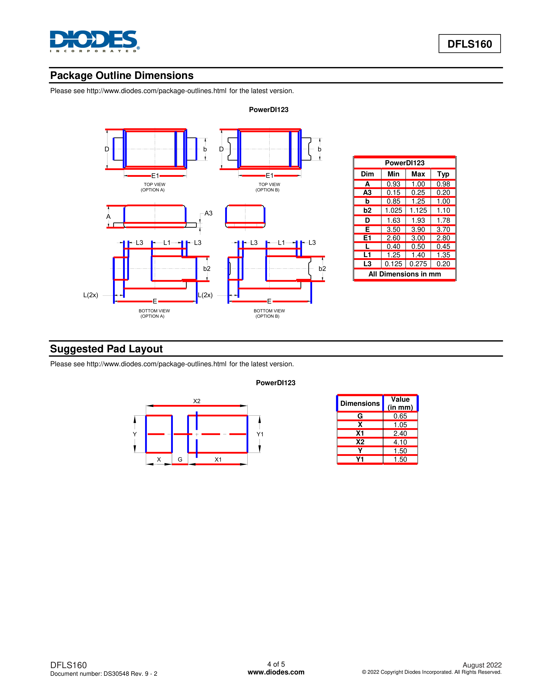

國立臺灣科技大學「Cloud Solution Architect 培訓班」2026 春季期末作業。題目核心是「跑通一條 LLM pipeline 把 10 份電子元件 datasheet PDF 抽成 11 個結構化欄位」。在培訓班基本要求之外，我用培訓班提供的 Azure AI Foundry V1 API quota 額外設計了雙軸實驗（PDF 抽取方法 × LLM 模型），把 V1 交件版的 60.9% 推到 V2 的 76.4%。
每個電子零件出廠時都附一份規格書（英文叫 datasheet），上面有品名、工作溫度、最大電壓、腳位數量等技術參數。工程師選零件、設計電路前要查這些參數。題目給 10 份這種 PDF，要求做一條自動化流程：丟 PDF 進去，AI 自動把規格參數抓出來填進 Excel，每份共 11 個欄位。老師事先準備好正確答案表（specbook.xlsx），用來逐欄比對 AI 答對幾題、算出準確率。要求「跑通一遍 + 交報告」就及格。

# 任務規格
- 輸入 — 10 份電子元件 datasheet PDF（二極體 / 整流橋 / 電晶體封裝，這三類都是電源電路常用的小零件）
- 輸出 — 每份 PDF 抽出 11 個結構化欄位：Part Number（零件型號）、Operating Temperature（工作溫度範圍）、封裝尺寸（零件外觀的長寬高 mm）、PIN Number（腳位數量）、I_O / I_F（輸出 / 順向電流）、V_F（順向電壓）、V_RRM（最大反向電壓）、I_R（反向漏電流）
- 評分 — 與
specbook.xlsx標答 byte-for-byte 比對，計算欄位準確率（11 欄 × 10 份 PDF = 110 個答案，答對幾題就是幾 %） - 基本要求 — 跑通 pipeline、交一份成果報告即可過關
# 培訓班基本要求之外的雙軸實驗設計
培訓班這個學期提供 Azure AI Foundry V1 API quota（連到微軟雲端跑大型 AI 模型的免費額度），多數作業只要跑通一個模型就符合及格條件。我把這個 quota 拿來做系統性的雙軸對照實驗：
一條 pipeline 由兩個關鍵零件組成：「把 PDF 解析成文字」的工具，加上「讀文字、抽欄位」的 AI 模型。要判斷哪個零件對結果影響最大，就要同時準備幾個候選互換，把所有組合都跑一次。3 種 PDF 抽取工具 × 5 種 AI 模型 = 15 種跑法，每種都用同一份 prompt、同一批 PDF、同一套標答評分。
這是科學實驗的對照組概念：固定其他變數，只動一個變數，比較結果差多少。V1 交件版（最弱的 qwen2.5:7b + pdfplumber）當基準線，剩下 14 種組合都跟它比，看是「換 PDF 工具」推得多還是「換 AI 模型」推得多。
PDF 抽取方法
- pdfplumber（讀 PDF 內建的文字層，速度快）
- PyMuPDF / fitz（讀 PDF 的向量物件，能拿到字的座標）
- camelot-py（專門偵測表格框線，相依 Ghostscript）
三者皆為 Python 常用的 PDF 抽取套件，各自擅長不同類型 PDF。
LLM 模型
- 本地 Ollama + qwen2.5:7b（V1 基線，最小最快）
- 本地 Ollama + qwen2.5:14b（同家族大一號）
- Azure GPT-4o（OpenAI 旗艦）
- Azure Llama-4-Maverick（Meta 開源旗艦）
- Azure mistral-medium-2505（Mistral 中量級）
本地表示模型權重下載至個人電腦、由顯卡執行，容量受限於 VRAM；雲端表示透過 API 連 Azure 執行旗艦級模型，消耗培訓班額度。
# V1 → V2 成果對照
| 階段 | 模型 | PDF 抽取 | 整體準確率 |
|---|---|---|---|
| V1 交件 | qwen2.5:7b（本地） | pdfplumber | 60.9% |
| V2 本地最佳 | qwen2.5:14b（本地） | pdfplumber | 64.5% |
| V2 整體最佳 | GPT-4o（Azure） | pdfplumber | 76.4% |
| V2 整體最佳 | mistral-medium-2505（Azure） | pdfplumber | 76.4% |
# 迭代過程：三條線並進
從 V1 交件版到 V2 整體最佳，分三條獨立但會互相影響的調整線。每一次跑完都歸檔到 output/_archive/ 內對應的子資料夾（如 v1_qwen7b/、v2_iter6_qwen14b/、v2_pdfplumber_azure_gpt_4o/），確保前一版結果不被覆蓋。
線 1：Prompt 改造（12 條盲設計決策）
V2 prompt 採盲設計原則 — 只用 11 個欄位名稱與一般電子工程 datasheet 領域常識推導，避免引用 V1 跑出的具體結果反向修正。盲設計指：寫 prompt 時不參照 V1 結果挑錯題反推規則，僅依欄位定義與 datasheet 領域慣例設計，以保留對未見樣本的泛化能力。12 條決策按類型整理：
| 類型 | 決策 |
|---|---|
| 輸入處理 | D1 Part Number 當 input（pipeline 執行前已知） |
| 範例引導 | D2 每欄位 ✓/✗ contrastive 範例（instruction-tuned 模型 edge case 顯著優於純正例） |
| 語意消歧 | D3 Tj vs Tstg 點名警告、D10 V_RRM 別名清單（V_RWM / Working Peak） |
| 單位與字符規範 | D4 L/W/H 取 MAX（非 NOM/TYP）、D5 mA→A、mV→V、inch→mm 換算、D7 全形頓號 `、` 當分隔、D9 μ→u 字符替換、D12 JSON key 特殊字元保留 |
| 多值處理 | D6 V_F / I_R 列所有測試條件（字串型別暗示多值） |
| 領域知識注入 | D8 封裝→PIN 對照表（JEDEC / 工業標準封裝） |
| 自我驗證 | D11 Self-check 7 條（覆蓋 D3-D9 高頻錯誤） |
線 2：PDF 抽取方法
同一份 prompt 與模型下，輪流換 PDF 抽取 backend，量化每種抽法對最終準確率的影響：
- pdfplumber — 純文字 layer，對標準格式 datasheet 表現最穩，成為 V2 預設。
- PyMuPDF / fitz — 向量物件層，對含 inline 註解與圖片的頁面解析較細，但整體準確率與 pdfplumber 接近。
- camelot-py — lattice 模式偵測表格框線，需 Ghostscript 依賴；對純表格 datasheet 有優勢但整體不及 pdfplumber。
結論：在這 10 份 datasheet 樣本上，PDF 軸極差只有 3.6%（見下節雙軸極差）。
線 3：模型升級
| 階段 | 組合 | 整體 |
|---|---|---|
| V1 交件 | qwen2.5:7b + 基本 prompt + pdfplumber | 60.9% |
| V2 iter6 | qwen2.5:7b + 12 條 prompt + validators 後處理 | 61.8% |
| V2 本地容量上限 | qwen2.5:14b + 12 條 prompt | 64.5% |
| V2 雲端躍升 | Azure GPT-4o / mistral-medium-2505 + 12 條 prompt | 76.4% |
主要躍升點在「本地 qwen 14b → 雲端 GPT-4o / Mistral」這一步，一次推 +12%。
後處理：validators.py
prompt 改造後仍會有約 10% 的格式 / 邏輯邊角錯。validators.py 接在 LLM 輸出後做規則修正：
- 單位再次標準化（μ→u、mA→A 等覆核）
- L/W/H 強制取 MAX
- 多值欄位排序 + 全形頓號重組
- JSON 缺欄位補
null
V2 iter6 用 validator 把 qwen2.5:7b 從 60.9% 推到 61.8%（同一模型，只靠後處理）。後續換模型後，validator 同步沿用。
# 雙軸極差：模型升級效益是 PDF 改良的 4 倍
極差 = 在所有跑過的組合裡，「最高分減最低分」的差距。同樣是換一個變數，差距越大代表這個變數對結果的槓桿越大。
這個比例（4×）說明在這個任務上，把固定預算花在升級模型，比花在優化 PDF 預處理回報高。本地 qwen 14b → 雲端 GPT-4o 一步 +12%，是整個實驗的主要躍升點。
# 模型強項分化（per-PDF 觀察）
MBR15U150 是一份 multi-product datasheet（同份 PDF 涵蓋多個型號變體），成為模型容量的試金石：
| 模型 | MBR15U150 命中（共 11 欄） |
|---|---|
| qwen2.5:7b（本地） | 1 / 11 |
| qwen2.5:14b（本地） | 4 / 11 |
| Llama-4-Maverick（Azure） | 2 / 11（MoE active 參數較小，退化） |
| mistral-medium-2505（Azure） | 6 / 11 |
| GPT-4o（Azure） | 7 / 11 |
三家雲端模型在不同類型 PDF 上各有強項：
- GPT-4o — multi-product datasheet 王（MBR15U150 7/11）+ 一般電氣參數王（BAT750 10/11）
- Llama-4-Maverick + mistral-medium-2505 — 簡單表格王（CD4148WTP 雙雙 11/11 滿分）
- mistral-medium-2505 — 橋式整流王（MSB30M 9/11）
若每份 PDF 都從三家雲端模型中選出該份得分最高者、再合併答案，理論上限為 80.9%。此估計需先擁有標準答案才能挑選最佳模型，屬於 overfit 估計（用 ground truth 反推哪家最強），實際使用情境下無標答可比對，因此 80.9% 無法達成。單一模型實測上限為 76.4%。
# 76.4% 在這個任務上代表什麼
- 就課程要求而言 — 基本要求為「跑通即過關」，並未訂定準確率門檻。V2 的 76.4% 較交件版 60.9% 高出 15.5 個百分點。
- 就任務難度而言 — 110 個答案中命中 84 題。datasheet 來自不同廠商、不同年代，欄位命名與表格排版差異顯著，此準確率反映 pipeline 對未見 PDF 樣本具備跨樣本的泛化能力。
- 就方法可複製性而言 — 雙軸實驗設計可移植至同類型任務。面對任何「非結構化文件抽欄位」題目，先以雙軸矩陣跑一輪基準，即可量化判斷預算應投入哪個方向。
# 技術棧
- 語言 / 主要套件 — Python 3.11.5、pdfplumber、PyMuPDF、camelot-py、openpyxl、openai SDK、python-dotenv
- 本地推理 — Ollama + qwen2.5:7b / 14b（Q4_K_M 量化）
- 雲端推理 — Azure AI Foundry V1 統一 API（OpenAI 相容 endpoint，由培訓班提供 quota）
- 推理設定 —
temperature=0、num_ctx=16384、format=json - 表格抽取輔助 — Ghostscript 10.07.0（camelot lattice 模式依賴）
- 架構抽象 —
pdf_extractor.py/llm_backend.py雙抽象層，可在.env切換BACKEND × PDF_EXTRACTORruntime 組合
致謝
感謝國立臺灣科技大學「Cloud Solution Architect 培訓班」舉辦這次課程並提供 Azure AI Foundry V1 API quota，讓雙軸實驗的雲端模型部分有資源能完整跑完。
Cloud Solution Architect 培訓班